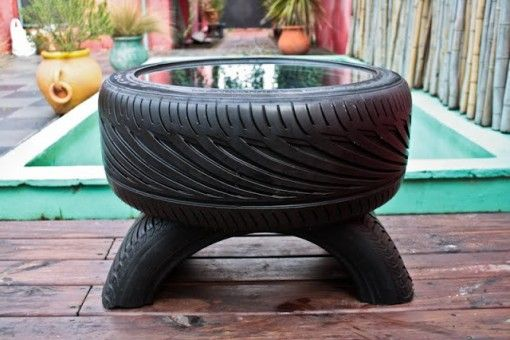
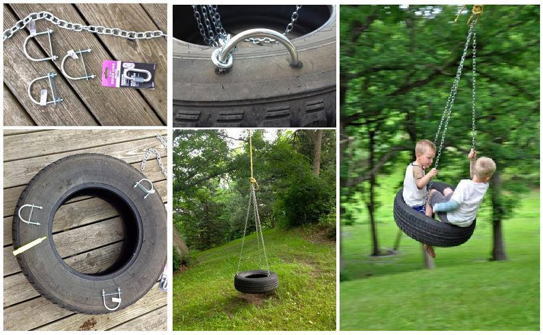
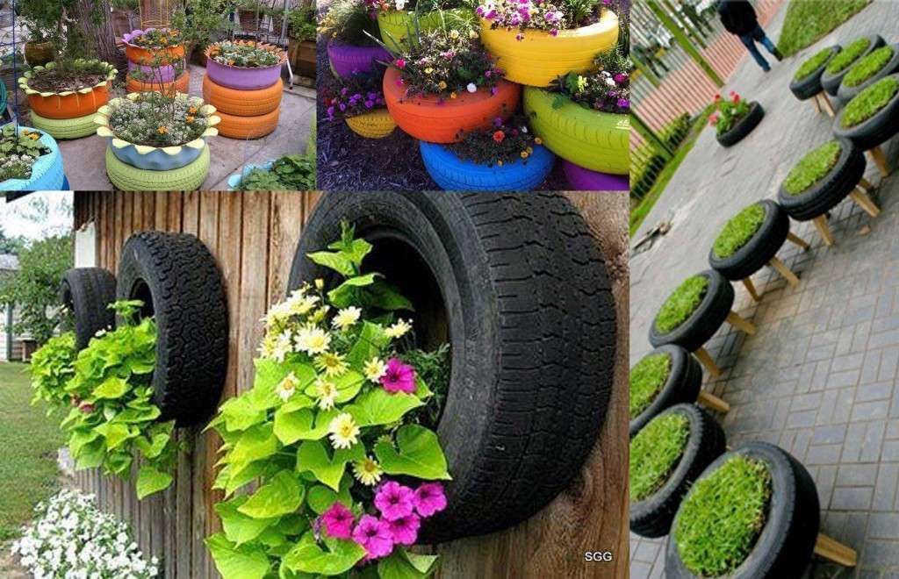
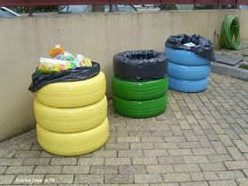
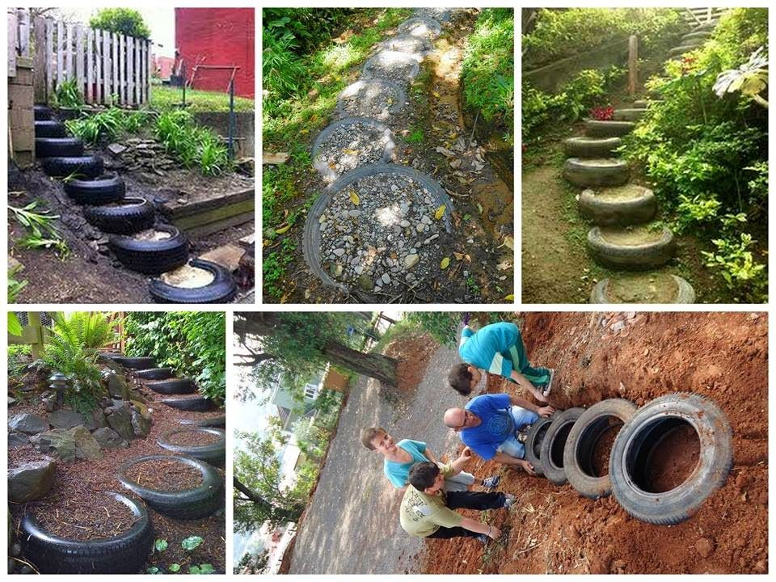

Ideas para reutilizar neumaticos
Reciclar neumáticos es una buena opción para aprovechar estos objetos y darles una nueva utilidad. Además, es la excusa perfecta para despejar espacio y, por supuesto, evitar desecharlos y contaminar el medio ambiente. Los neumáticos dañados o desgastados, en su mayoría, son desechados directamente a la basura. Pero el hecho de que no sirvan para cumplir su función original, no quiere decir que no se les pueda dar otro uso. A continuación, te ofrecemos 5 ideas para crear objetos originales y muy prácticos. Solo es cuestión de dejar volar la imaginación. Pon a prueba tu ingenio y ¡anímate a reciclar!
1. Mesa de café o de sala

Esta práctica idea es muy fácil de elaborar, y consiste en tomar uno o dos neumáticos
como base, a los cuales se les pone una especie de tapa superior en madera o vidrio que
haga las veces de mesa.
Algunas personas le hacen forros de tela o de pieles sintéticas para combinarlos con sus
muebles. Otros, optan por acabados más rústicos, como forrarlos con cuerdas de soga.
En el primer caso, se deben cortar dos círculos de tela o de material sintético, según las
medidas del neumático, para cubrir la tapa superior y la inferior. A continuación, esto se
une a un rectángulo de tela que cubra el contorno de los neumáticos.
Si deseas hacerlo más práctico, y lavarlo cuando sea necesario, colócale un cierre en la
unión de la cubierta inferior con el borde del rectángulo.
Si optas por el uso de la soga, asegúrate de tener una extensión suficientemente larga
para cubrir el contorno del caucho y la tapa. De esta manera tendrás una mesa muy original
y funcional.
2. Columpios para niños

Si vives en una casa con suficiente espacio exterior y algún árbol alto, puedes
recrear un clásico columpio. Esta opción es muy sencilla y tus hijos la adorarán.
Primero, debes limpiar muy bien el neumático. Si deseas, lo puedes pintar para darle
una apariencia más divertida. Recuerda que la pintura debe ser resistente al agua
para que soporte las inclemencias del clima.
A continuación, con la ayuda de un taladro, abre los huecos por donde va a pasar
el anclaje y asegúralo con unas cuerdas resistentes. Por último, se debe colgar
de una rama fuerte de un árbol y listo, ¡ya tienes tu propio columpio!
3. Macetas

Otra forma de reciclar neumáticos consiste en incluirlos en el jardín.
¿Cómo? Muy simple, solo debes convertirlos en macetas. Si deseas plantar un árbol,
necesitas cuidarlo mucho al comienzo. Especialmente, para que no se vaya de lado o
se caiga con el viento.
Una buena idea para esto es plantarlo y colocarle un par de neumáticos usados
alrededor. De esta manera, el árbol quedará mucho más protegido y podrás regarlo
cómodamente desde arriba.
Por otra parte, al convertirlos en macetas, su alta dureza hace que puedan soportar
la presión que ejerce la tierra y las raíces de las plantas. Tampoco debes preocuparte
porque se oxide el material por el agua.
Esta transformación tiene varias versiones. Si se colocan directamente en el jardín,
solo necesitas pintarlo y plantar en él, ya que la tierra servirá como tapa inferior.
Si quieres reutilizar los neumáticos en otra superficie y, de manera móvil, entonces
debes elaborar una base para evitar que se le salga la tierra.
4. Contenedores para artículos de jardinería o depósitos de basura

Si tienes tres neumáticos, puedes apilarlos uno sobre otro y unirlos entre sí con
algún tipo de costura o soporte de alambre, para que permanezcan en esa posición.
A continuación, recorta un círculo de madera del diámetro del neumático, y pégalo en
la parte de abajo. Luego, puedes pintar los neumáticos con diferentes colores y, una
vez listos, añadir una tapa en la parte superior.
Recuerda que, si decides que el contenedor será de basura, debes colocarle una bolsa
plástica para quitarla cuando esté llena.
5. Como escalones en pendientes

Si habitas en zonas rurales con pendientes, esta opción es muy práctica, ya que los
neumáticos pueden servir de peldaños para subir y bajar las pendientes.
Solo es cuestión de marcar la zona por donde harás el camino, y escalonar la
pendiente. Luego, se deben colocar los neumáticos en cada escalón, llenándolos
posteriormente con la misma tierra que se retiró al hacer los escalones.
De esta manera se mantendrán firmes.
Ahora que ya conoces los usos alternativos que le puedes dar a esos neumáticos
viejos, anímate a probarlos y dale un toque de originalidad a tus espacios.
Enlaces externos